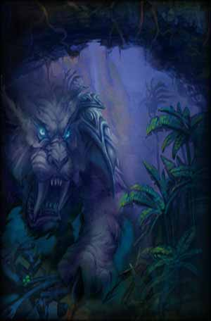

<html>
<head>
<script>
var _
var data=[]
data.n=1
_=data[0]=[]
_.n="Beast Mastery"
_=data[0][0]=[1]
_.n="Improved Aspect of the Hawk"
_.d="While Aspect of the Hawk is active, all normal ranged attacks have a $% chance of increasing ranged attack speed by 30% for 12 sec."
_.m=5
_.x=2
_.y=0
_=data[0][1]=[3]
_.n="Endurance Training"
_.d="Increases the Health of your pets by $%."
_.m=5
_.x=3
_.y=0
_=data[0][2]=[30]
_.n="Improved Eyes of the Beast"
_.d="Increases the duration of your Eyes of the Beast by $ sec."
_.m=2
_.x=1
_.y=5
_=data[0][3]=[1]
_.n="Improved Aspect of the Monkey"
_.d="Increases the Dodge bonus of your Aspect of the Monkey by $%."
_.m=5
_.x=2
_.y=5
_=data[0][4]=[10]
_.n="Thick Hide"
_.d="Increases the Armor rating of your pets by $%."
_.m=3
_.x=3
_.y=5
_=data[0][5]=[3,20,15]
_.n="Improved Revive Pet"
_.d="Revive Pet's casting time is reduced by $ sec, Mana cost is reduced by $%, and increases the health your pet returns with by an additional $%."
_.m=2
_.x=4
_.y=5
_=data[0][6]=[3]
_.n="Pathfinding"
_.d="Increases the speed bonus of your Aspect of the Cheetah and Aspect of the Pack by $%."
_.m=2
_.x=1
_.y=10
_=data[0][7]=[]
_.n="Bestial Swiftness"
_.d="Increases the outdoor movement speed of your pets by 30%."
_.m=1
_.x=2
_.y=10
_=data[0][8]=[4]
_.n="Unleashed Fury"
_.d="Increases the damage done by your pets by $%."
_.m=5
_.x=3
_.y=10
_=data[0][9]=[[15,50]]
_.n="Improved Mend Pet"
_.d="Gives the Mend Pet spell a $% chance of cleansing 1 Curse, Disease, Magic or Poison effect from the pet each tick."
_.m=2
_.x=2
_.y=15
_=data[0][10]=[3]
_.n="Ferocity"
_.d="Increases the critical strike chance of your pets by $%."
_.m=5
_.x=3
_.y=15
_=data[0][11]=[1]
_.n="Spirit Bond"
_.d="While your pet is active, you and your pet will regenerate $% of total health every 10 sec."
_.m=2
_.x=1
_.y=20
_=data[0][12]=[]
_.n="Intimidation"
_.d="Command your pet to intimidate the target on the next successful melee attack, causing a high amount of threat and stunning the target for 3 sec."
_.m=1
_.x=2
_.y=20
_.t=['8% of base Mana','100 yd range','Instant cast','1 min cooldown']
_=data[0][13]=[10]
_.n="Bestial Discipline"
_.d="Increases the Focus regeneration of your pets by $%."
_.m=2
_.x=4
_.y=20
_=data[0][14]=[20]
_.n="Frenzy"
_.d="Gives your pet a $% chance to gain a 30% attack speed increase for 8 sec after dealing a critical strike."
_.m=5
_.x=3
_.y=25
_.r=[10,5]
_=data[0][15]=[]
_.n="Bestial Wrath"
_.d="Send your pet into a rage causing 50% additional damage for 18 sec. While enraged, the beast does not feel pity or remorse or fear and it cannot be stopped unless killed."
_.m=1
_.x=2
_.y=30
_.r=[12,1]
_.t=['12% of base Mana','100 yd range','Instant cast','2 min cooldown']
_=data[1]=[]
_.n="Marksmanship"
_=data[1][0]=[4]
_.n="Improved Concussive Shot"
_.d="Gives your Concussive Shot a $% chance to stun the target for 3 sec."
_.m=5
_.x=2
_.y=0
_=data[1][1]=[2]
_.n="Efficiency"
_.d="Reduces the Mana cost of your Shots and Stings by $%."
_.m=5
_.x=3
_.y=0
_=data[1][2]=[3]
_.n="Improved Hunter's Mark"
_.d="Increases the Ranged Attack Power bonus of your Hunter's Mark spell by $%."
_.m=5
_.x=2
_.y=5
_=data[1][3]=[1]
_.n="Lethal Shots"
_.d="Increases your critical strike chance with ranged weapons by $%."
_.m=5
_.x=3
_.y=5
_=data[1][4]=[]
_.n="Aimed Shot"
_.d="An aimed shot that increases ranged damage by 600."
_.m=1
_.x=1
_.y=10
_.z=6
_.t=['310 Mana','8-35 yd range','3 sec cast','6 sec cooldown','Requires Ranged Weapon']
_=data[1][5]=[0.2]
_.n="Improved Arcane Shot"
_.d="Reduces the cooldown of your Arcane Shot by $ sec."
_.m=5
_.x=2
_.y=10
_=data[1][6]=[2]
_.n="Hawk Eye"
_.d="Increases the range of your ranged weapons by $ yards."
_.m=3
_.x=4
_.y=10
_=data[1][7]=[2]
_.n="Improved Serpent Sting"
_.d="Increases the damage done by your Serpent Sting by $%."
_.m=5
_.x=2
_.y=15
_=data[1][8]=[6]
_.n="Mortal Shots"
_.d="Increases your ranged weapon critical strike damage bonus by $%."
_.m=5
_.x=3
_.y=15
_.r=[3,5]
_=data[1][9]=[]
_.n="Scatter Shot"
_.d="A short-range shot that deals 50% weapon damage and confuses the target for 4 sec. Any damage caused will remove the effect."
_.m=1
_.x=1
_.y=20
_.t=['8% of base Mana','15 yd range','Instant','30 sec cooldown','Requires Ranged Weapon']
_=data[1][10]=[5]
_.n="Barrage"
_.d="Increases the damage done by your Multi-Shot and Volley spells by $%."
_.m=3
_.x=2
_.y=20
_=data[1][11]=[10]
_.n="Improved Scorpid Sting"
_.d="Reduces the Stamina of targets affected by your Scorpid Sting by $% of the amount of Strength reduced."
_.m=3
_.x=3
_.y=20
_=data[1][12]=[1]
_.n="Ranged Weapon Specialization"
_.d="Increases the damage you deal with ranged weapons by $%."
_.m=5
_.x=3
_.y=25
_=data[1][13]=[]
_.n="Trueshot Aura"
_.d="Increases the Ranged and Melee Attack Power of party members within 45 yards by 100. Lasts 30 min."
_.m=1
_.x=2
_.y=30
_.z=3
_.r=[10,3]
_.t=['325 Mana','','Instant cast']
_=data[2]=[]
_.n="Survival"
_=data[2][0]=[1,1]
_.n="Monster Slaying"
_.d="Increases all damage caused against Beast, Giants and Dragonkin targets by $% and increases critical damage caused against Beasts, Giants and Dragonkin targets by an additional $%."
_.m=3
_.x=1
_.y=0
_=data[2][1]=[1,1]
_.n="Humanoid Slaying"
_.d="Increases all damage caused against Humanoid targets by $% and increases critical damage caused against Humanoid targets by an additional $%."
_.m=3
_.x=2
_.y=0
_=data[2][2]=[1]
_.n="Deflection"
_.d="Increases your Parry chance by $%."
_.m=5
_.x=3
_.y=0
_=data[2][3]=[5]
_.n="Entrapment"
_.d="Gives your Immolation Trap, Frost Trap, and Explosive Trap a $% chance to entrap the target, preventing them from moving for 5 sec."
_.m=5
_.x=1
_.y=5
_=data[2][4]=[10]
_.n="Savage Strikes"
_.d="Increases the critical strike chance of Raptor Strike and Mongoose Bite by $%."
_.m=2
_.x=2
_.y=5
_=data[2][5]=[4]
_.n="Improved Wing Clip"
_.d="Gives your Wing Clip ability a $% chance to immobilize the target for 5 sec."
_.m=5
_.x=3
_.y=5
_=data[2][6]=[15,15]
_.n="Clever Traps"
_.d="Increases the duration of Freezing and Frost trap effects by $% and the damage of Immolation and Explosive trap effects by $%."
_.m=2
_.x=1
_.y=10
_=data[2][7]=[2]
_.n="Survivalist"
_.d="Increases total health by $%."
_.m=5
_.x=2
_.y=10
_=data[2][8]=[]
_.n="Deterrence"
_.d="When activated, increases your Dodge and Parry chance by 25% for 10 sec."
_.m=1
_.x=3
_.y=10
_.t=['Instant','5 min cooldown']
_=data[2][9]=[5]
_.n="Trap Mastery"
_.d="Decreases the chance enemies will resist trap effects by $%."
_.m=2
_.x=1
_.y=15
_=data[2][10]=[1,5]
_.n="Surefooted"
_.d="Increases hit chance by $% and increases the chance movement impairing effects will be resisted by $%."
_.m=3
_.x=2
_.y=15
_=data[2][11]=[2]
_.n="Improved Feign Death"
_.d="Reduces the chance your Feign Death ability will be resisted by $%."
_.m=2
_.x=4
_.y=15
_=data[2][12]=[1]
_.n="Killer Instinct"
_.d="Increases your critical strike chance with all attacks by $%."
_.m=3
_.x=2
_.y=20
_=data[2][13]=[]
_.n="Counterattack"
_.d="A strike that becomes active after parrying an opponent's attack. This attack deals 110 damage and immobilizes the target for 5 sec. Counterattack cannot be blocked, dodged, or parried."
_.m=1
_.x=3
_.y=20
_.z=3
_.r=[8,1]
_.t=['85 Mana','5 yd range','Instant cast','5 sec cooldown']
_=data[2][14]=[3]
_.n="Lightning Reflexes"
_.d="Increases your Agility by $%."
_.m=5
_.x=3
_.y=25
_=data[2][15]=[]
_.n="Wyvern Sting"
_.d="A stinging shot that puts the target to sleep for 12 sec. Any damage will cancel the effect. When the target wakes up, the Sting causes 600 Nature damage over 12 sec. Only usable out of combat. Only one Sting per Hunter can be active on the target at a time."
_.m=1
_.x=2
_.y=30
_.z=3
_.r=[12,3]
_.t=['205 Mana','8-35 yd range','Attack speed','2 min cooldown','Requires Ranged Weapon']
</script>
</head>
<body>
<!--[if lte IE 6]>





<![endif]-->
</body>
</html>;